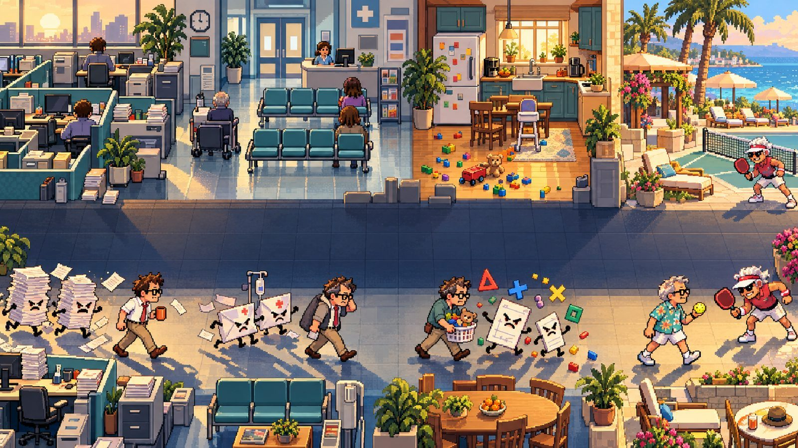
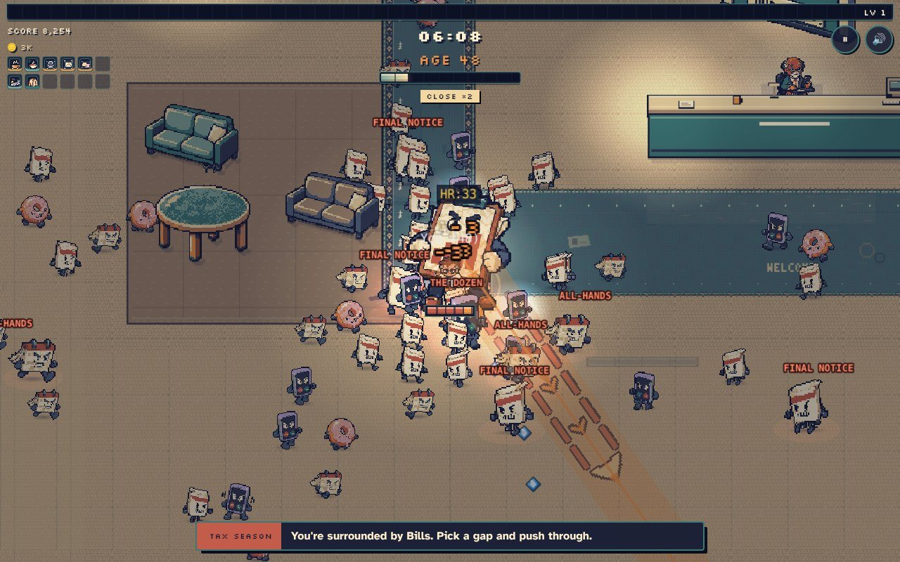
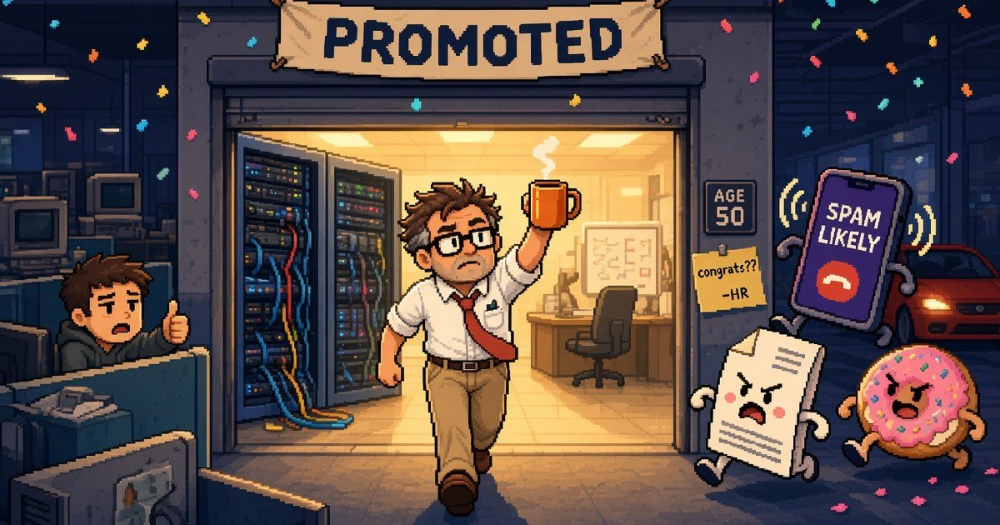
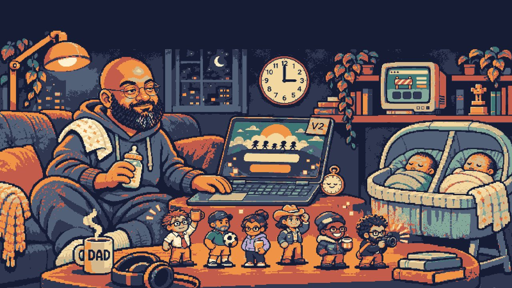
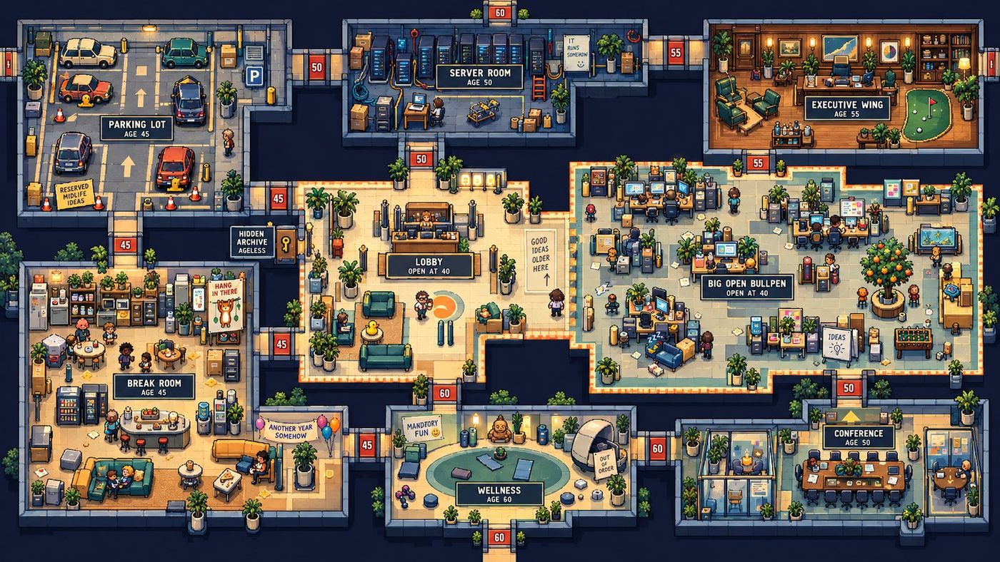
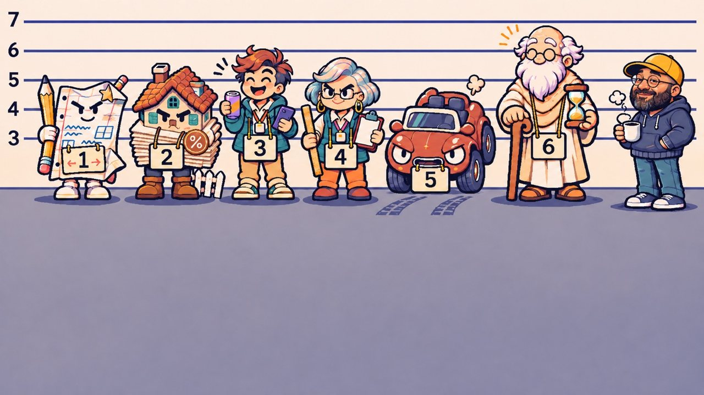
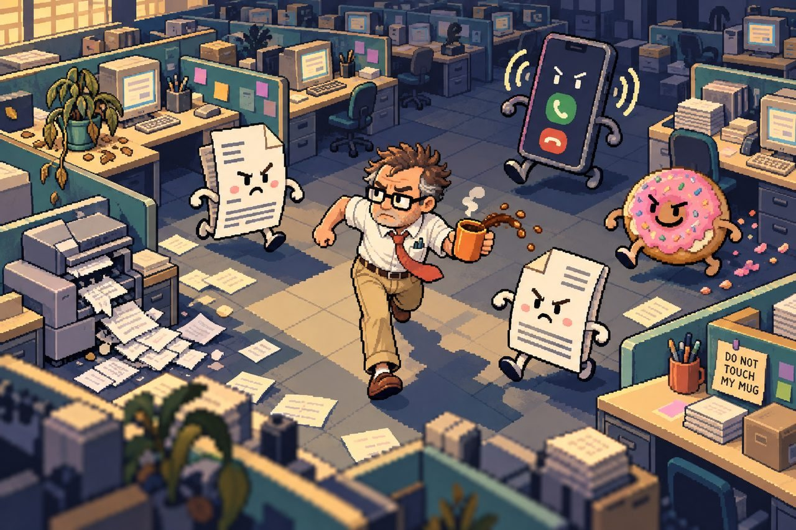
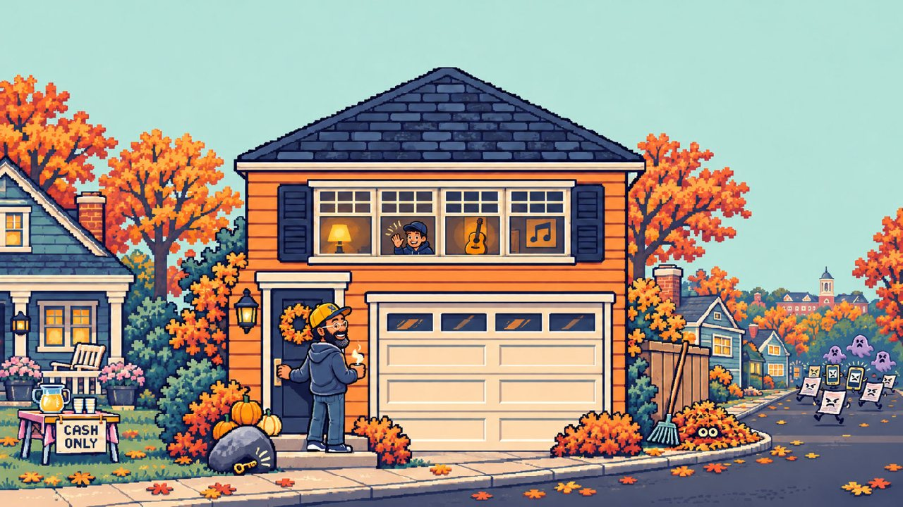

The 9-to-5er
Arthur “Artie” Pendelton, 40 · Hot Coffee Splash
“Per my last email, I will be surviving until 5:00 PM or Age 80, whichever comes first.”
board entries0%

A free browser game about getting from 40 to 65 in one piece. You only move. Your coffee, your dad jokes and a firm “No.” fire on their own while the bills close in.
What it tests: how far AI tools can carry a real project when one person directs them, checks every build and writes down what broke.
Midlife works like a bullet hell. So I made one.
I had never made a game. I started on Oct 30 with three rules: build it in public, write a memo after every working session, and let the people playing it shape it. Get promoted to open new rooms, survive the Performance Review and the 30-Year Mortgage, and make it to your Retirement Party. Midlife is hard. It’s also kind of great.
It is also my test bench. Shipping something real every day is how I find out what AI tools are good at and where they fall down: Claude writes most of the code, ChatGPT and Codex draw from my direction, Gemini and Grok push back on the design. I make the calls and I write down what happened, mistakes included.

I've spent twenty-some years figuring out where to stand and when to press the button. Somewhere in my forties I realized midlife works like Vampire Survivors: you don't choose your attacks anymore, you just keep moving while the bills, the robocalls and the back pain close in. My Top 10 midlife annoyances became the enemies.
Read the memo (opens in a new window)A test bot proved it: fully upgraded and not moving, it lasted 13 minutes. Now the game grows with you. Enemies get tougher every level, hits hurt more after 48, and the 401(k) Shop is something you work toward over many runs.
Read the memo (opens in a new window)Every five years you get promoted, a door rolls up and the office gets bigger, from the Bullpen to the Executive Wing. Corporate slang became furniture, and almost everything breaks.
Read the memo (opens in a new window)
TJ and Derek, two of our student photographers, found bugs and became interns in the game. Ben became the Cold War Cowboy. Kevin sent ideas on Discord, and three are in the game, including Burning the Candle, which is where Medical Bill comes from.
Read the memo (opens in a new window)Built on paternity leave, between 3 a.m. feedings. The game got its own Discord, and it posts its own changelog and stats every day.
Read the memo (opens in a new window)
Every number here is read from the game’s own files when this page loads, and it keeps checking while you’re here.
The game keeps its own changelog, and every release gets a line. The busiest stretch was the first week, when friends started finding bugs faster than I could fix them.
The age every posted run reached, with the bosses waiting along the way. A lot of runs stop just past 60, most of them from the first week of play. The spike at 80 is people maxing out Overtime.
Boss codes come from the game: HR, the Performance Review. MGR, Your New Boss (Age 26). APR, the 30-Year Mortgage. PARTY, the Holiday Party or the Reorg. Q3, the All-Hands. TIME, the Gold Watch. Hover or tab to a code for the name.
The heroes are you at midlife. The enemies are midlife: a Bill that splits into Late Fees, “Spam Likely,” which rings before it charges, and donuts that slow you down. The Cold War Cowboy is my friend Ben, who has worked IT since the floppy disk was cutting edge. He joined on Nov 4, which is why he’s catching up.
The 9-to-5er
Arthur “Artie” Pendelton, 40 · Hot Coffee Splash
“Per my last email, I will be surviving until 5:00 PM or Age 80, whichever comes first.”
The Soccer Dad
Dale “Coach” Mercer, 43 · Dad Joke Aura
“Hustle back on defense! Also, did you hear about the claustrophobic astronaut? He just needed a little space.”
The Grad Student at 45
The dual-career night owl · The Word “No.”
“I have a paper due at midnight and a staff meeting at eight. Your calendar invite has been declined.”
The Cold War Cowboy
Ben, IT since 2002 · Floppy Disk
“Have you tried turning it off and on again? No? Then I will.”
Best run per name, the way the game ranks it. The board refreshes every minute. The floor report is written each morning by the game’s Discord bot.
Every five years you get promoted, a door rolls up and the office gets bigger, from the Bullpen to the Executive Wing. Bosses arrive at set ages. Past 65, Overtime from the 401(k) Shop can push retirement back to 80.

Rooms open above the line. Bosses arrive below it.
The art is drawn by AI from my direction, then picked, cut and fixed until it reads like one game.



The tools I evaluated on this project, what each one did, and what I checked.
I bring the vision, the jokes, the playtesting and the “no, that doesn’t feel right yet.” Every session ends with a devlog memo, so anyone can see how it gets made. Playtesters shaped the game: two of our student photographers found bugs and became interns in it, and one friend’s ideas from Discord are now in the game.